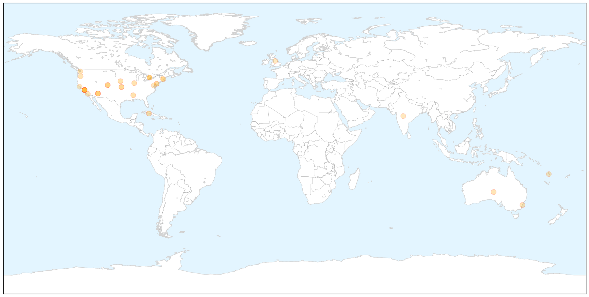

Swine Flu
30-Day Web Trend
10 alerts, 11 warnings

30-Day Twitter Trend
0 alerts, 0 warnings

Article Locations


Article Confidences

Top Articles:
- 1.000
- Swine flu claims 38 more lives, death toll now 812
- 1.000
- Swine flu claims 38 more lives
- 1.000
- Swine flu claims 38 more lives, death toll crosses 800
- 1.000
- The New Indian Express
- 1.000
- H1N1 Swine flu claims 38 more lives, death toll crosses 800
- 1.000
- 31 more die, toll from swine flu rises to 774
- 0.999
- Haryana doctors at odds over swine flu
- 0.999
- Haryana doctors at odds over swine flu
- 0.999
- Haryana doctors at odds over swine flu
- 0.999
- Haryana doctors at odds over swine flu
- 0.999
- Haryana doctors at odds over swine flu
- 0.999
- Haryana doctors at odds over swine flu
- 0.999
- Haryana doctors at odds over swine flu
- 0.999
- Haryana doctors at odds over swine flu
- 0.999
- Haryana doctors at odds over swine flu
- 0.999
- Haryana doctors at odds over swine flu
- 0.999
- Haryana doctors at odds over swine flu
- 0.999
- Swine flu scare: Doctors warn against social media panic
- 0.999
- Swine flu cases swell despite rise in temperature in city
- 0.998
- Uttar Pradesh: Swine flu cases surge to 250
- 0.998
- Delhi hospital faces medicine shortage as doctors say children most at risk of H1N1
- 0.998
- Swine Flu H1N1: One more dies of swine flu in Kashmir, toll reaches 5
- 0.998
- 1 more swine flu death in Chhattisgarh, toll reaches 4
- 0.997
- Killer swine flu strikes India
- 0.997
- India makes key ingredient in 'world's most wanted' swine flu drug
- 0.996
- Child death takes swine flu toll in state to four
- 0.996
- H1N1 Swine flu: Vaccine 'dries up' in Kashmir, doctors at risk
- 0.995
- Read Health News & Articles at TheHealthSite.com
- 0.995
- Swine flu: Infants at higher risk at Sucheta Kriplani Hospital in Delhi : India, News
- 0.994
- Swine flu claims 774 deaths with 12,963 infections
- 0.994
- WhatsApp, Facebook new age weapons to ‘fight’ swine flu
- 0.993
- Swine flu return feared during monsoon months
- 0.992
- Private labs overcharging for swine flu tests issued notices
- 0.992
- Doctors tested positive for swine flu virus in Kashmir
- 0.991
- H1N1 Swine flu: Six cases in Jammu; doctors say not enough supply of medicines
- 0.990
- Swine flu claims seven more lives in Rajasthan, toll 212
- 0.987
- 5 new swine flu cases in Bengal
- 0.987
- Health Minister assures Nirmal on support for fighting Swine flu in J&K
- 0.987
- Swine Flu Kills 10 More in Gujarat; Toll Reaches 207
- 0.986
- Swine flu surge: 38 test +ve in a day
- 0.985
- Nine IPS trainees at NPA test positive for swine flu
- 0.984
- H1N1 cases surge past 3,000-mark in Gujarat
- 0.983
- Assembly Speaker, IAS officer down with swine flu – THE SEN TIMES
- 0.979
- Congress workers distribute medicines to combat swine flu in Gujarat
- 0.978
- Gujarat: Congress workers distribute medicines to combat swine flu
- 0.976
- Gujarat: Congress workers distribute medicines to combat swine flu
- 0.971
- After weeks of ‘widespread’ flu, New Hampshire officials urging vigilance on healthy habits
- 0.970
- AAP Delhi government had fixed the swine flu test price at Rs. 4500
- 0.962
- Suspected H1N1 Victim Dies of Heart Attack
- 0.952
- Congress workers distribute free masks, medicines to combat swine flu
Showing top 50 articles...
Top Tweets:
-
No tweets found for Feb 22, 2015
Measles
30-Day Web Trend
11 alerts, 7 warnings

30-Day Twitter Trend
3 alerts, 0 warnings

Article Locations

X

Article Confidences

Top Articles:
- 0.989
- Monday Medical: measles is very contagious and preventable
- 0.981
- 10th measles case confirmed in Toronto
- 0.976
- Snohomish County has close call with measles-infected visitor
- 0.974
- 19th case of measles
- 0.964
- No measles cases in area
- 0.957
- Local providers urge measles shots - Steubenville, Wintersville, Toronto, Mingo, Weirton, Jefferson County
- 0.951
- States Improve Response to Measles Outbreaks
- 0.949
- Vaccinations are safe and effective
- 0.934
- More measles cases tied to Disneyland, Illinois day care Republican American
- 0.923
- 10th confirmed case of measles in Toronto an adult female
- 0.916
- Toronto health officials report 10th case of measles
- 0.875
- In defence of vaccination
- 0.863
- Amid debate, doctors say it's clear: Immunizations work
- 0.862
- End the religious and philosophical exemptions for vaccines;
- 0.857
- Falling immunisation rates linked to spread of measles
- 0.843
- What to know about measles and vaccinations
- 0.841
- Dana Hills High School
- 0.799
- Adults Not Off the Hook on Measles Outbreak
- 0.780
- Doctors focus on 'vaccine-hesitant,' not 'anti-vaxxers,' to fight outbreaks
- 0.777
- Protect our children and community
- 0.765
- Vaccination reduces chance of virus outbreak
- 0.764
- Health unit can send unvaccinated children home during outbreaks
- 0.742
- Could Milwaukee Have a Measles Outbreak? Urban Milwaukee
- 0.733
- Vaccines are unavoidably political
- 0.703
- UB Reporter: Need to know news and views for UB faculty and staff
- 0.698
- Vaccine opposition ebbs and flows
- 0.692
- Vaccinations are parents' responsibility
- 0.675
- Where does New Hampshire stand on childhood vaccine exemptions?
- 0.632
- Teacher vaccinations latest issue in war on illness in the classroom
- 0.567
- Paul Offit’s Measles Crusade
Top Tweets:
-
No tweets found for Feb 22, 2015